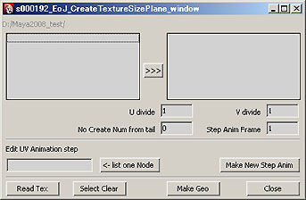
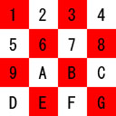

s000192_EoJ_create_tex_size_plane

機能： tm2の解像度をUV分割したエリアにFitするポリゴンを生成しフォンシェーディングで貼り付けます。
機能説明：
tm2一覧： フォルダー内のtm2を一覧表示します。
>>>ボタン： tm2一覧から選択されたファイルをポリゴン作成リストに表示します。
ポリゴン作成リスト： 作成するtm2ファイルを表示します。
U divide： tm2のU座標の分割数。
V divide： tm2のV座標の分割数。
No Create Num from tail： 後方から何枚目までをアニメーションに使わないかの設定。
Step Anim Frame： アニメーションのステップ数。
<- list one Node： アニメーション再設定時のノードを一個選択しボタンでリストUP。
Make New Step Anim： 再設定アニメーションの作成。
Read Tex： tm2のあるフォルダーを選択します。
Select Clear： ポリゴン作成リスト中で選択しているものをリストから削除します。
Make Geo： tm2解像度をUV分割数で分割したサイズにFitする四角形を作成、tm2を貼り付けます。
Closeボタン： スクリプト終了
使用法：
tm2の保存されているフォルダをReadTexボタンにて指定します。フォルダ下に存在するtm2が全てtm2一覧の
リストにUPされますので作成するtm2を選択し>>>ボタンにて右のポリゴン作成リストにUPします。
ポリゴン作成リストに入っているtm2のリストはWクリックにてそのイメージを別ウィンドにて表示できます。
一枚のtm2をUVそれぞれ何分割するかをU divide,V divideに設定し後方から何枚分のイメージを使用しないか
をNo Create Num from tail に設定、アニメーションのステップを設定しMakeGeoボタンでポリゴンを生成しtm2を
貼り付けた後アニメーションの設定を行います。
なおポリゴン作成リストにUPされているファイル全てに対し上記の設定を行いますので分割数の違うものやステップ数
を変えたいものは対象のtm2ファイル名を選択しSelectClearにてリストから除外してください。
アニメーションの再設定はノードを一個のみ選択し<-list one NodeにてリストUPしUVのdivide値、Step Anim Frame、
No Create Num from tailを設定してMake New Step Animボタンにて再設定が出来ます。
備考：

上記イメージを使用の場合U divide = 4, V divide = 4 となり１〜Eまでアニメーションする場合（F,Gを使わない）は
No Create Num from tail は２になります。